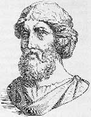

Her şey sayılardan oluşur.
— Pisagor
Pisagor (MÖ 580-500), mensuplarının matematik ve bilimle uğraşarak Tanrı’ya yaklaşabileceklerine inandıkları eski bir Yunan tarikatının kurucusudur. Bu disiplinli topluluğun üyeleri, aralarında ünlü Pisagor teoriminin de bulunduğu, matematik ve geometrinin temel ilkelerini geliştirmişlerdir. Onların çalışmaları sayesinde önderleri Pisagor, matematiğin babaları arasında sayılmaktadır.

Türkiye sahiline yakın Samos Adası’nda doğan Pisagor kırklı yaşlarında Güney İtalya’daki Croton’a gitmiştir. Pisagorcular grubunun kuruluşundan sonra taraftarları ile birlikte Yunanca konuşulan Güney İtalya’daki bir başka şehir olan Metapontum’a gider. Doksan yaşındayken burada hayata gözlerini yumacaktır.
Reenkarnasyona olan inanç, Pisagor dininin temel prensipleri arasında yer almaktadır. Pisagorcular ruhun yok edilemez olduğu fikrini savunmaktadırlar. Ne var ki insanların daha iyi bir reenkarnasyonla yeniden dünyaya gelebilmeleri için bazı sıkı kurallara uyarak yaşamaları gerekmektedir. Tapınakta ayakkabı giymemek, beyaz horozlara dokunmamak, önce sağ ayakla adım atmak ve fasulye yemekten kaçınmak bu sıkı kurallardan sadece birkaçıdır.
Pisagor matematikle ilgilenmenin, Tanrı’nın aklını anlamaya yardımcı olacak kutsal bir görev olduğuna inanıyordu. Zira onun düşüncesine göre doğanın tamamı sayılarla anlatılabilirdi. Pisagorcu matematikçiler ünlü a2+b2=c2 teoremini kanıtlamayı başardılar: Yani dik üçgende hipotenüsün karesi her zaman diğer iki kenarın karelerinin toplamına eşittir. Pisagorcular aynı zamanda irrasyonel sayılar konseptini (kesirler olarak ifade edilemeyen sayılar) ve karekök nosyonunu da geliştirmişlerdir.
Pisagor’un yaşamı hakkında pek az şey bilinmektedir. Bununla birlikte onun hakkında ayın üzerine yazı yazabilmesi ya da zamanda yolculuk yapması gibi gerçek olması mümkün gözükmeyen çok sayıda mit bulunmaktadır. Bu mitler filozof-matematikçinin ölümünden sonra ortaya atılmıştır. Taraftarları her ne kadar ölümünden yüzyıllar sonra da artmaya devam etmişse de Pisagor tarikatı zamanla ortadan kalkmıştır.
Ek Bilgiler
1- Pisagorcu olmak isteyenlerin beş yıl boyunca sessiz kalarak iradelerini kanıtlamaları gerekiyordu.
2- Pisagorla ilgili bir mite göre oyluk kemiği altındandı. Onun aynı anda iki yerde birden bulunabildiği de söylenmektedir.
3- Fasulye yasağının yanı sıra, Pisagor, taraftarlarına anemon, tarla öküzü ve hayvan kalplerini de yememelerini öğütlemiştir.